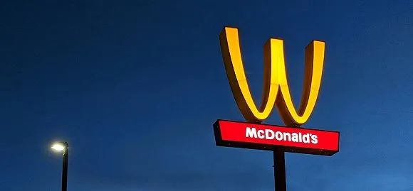
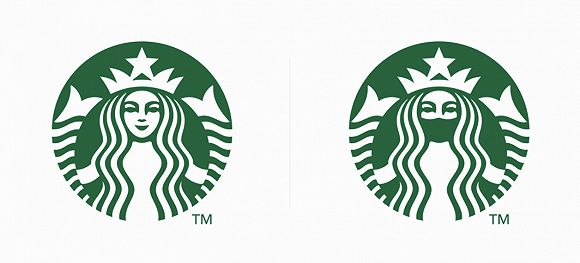

反思 | 过度社交/营销号的诈骗/留学生的两个世界
原文链接 备份链接 ©送给自己21岁的第二个生日礼物，关于20岁的反思（顺带狂批营销号和一部分华人及留学生） 20岁最让我后悔的，莫过于选择尝试了过度社交。 这其实是我曾经的一个盲区。我自幼至20岁都不懂社会社交真实的境况到底如何。 在读 …

记者：刘雨静
编辑：马越
“
连logo也要保持距离。
”
麦当劳的金拱门是商业社会最具代表性也是最成功的logo之一，不过最近由于疫情，连麦当劳也把M字logo分开了。
巴西麦当劳最近在社交媒体中晒出一张更新的麦当劳logo：M的两边被拆出了一定距离，目的是为了建议消费者“为了今后更好地相聚，暂时先保持距离一段时间”。

分开的金拱门
关于这个营销创意，社交媒体的评论毁誉参半：一些人觉得创意有趣，也有人认为不应该拿这场全球流行病作为广告创意，“代理商不应该把流行病变成一条打算拿奖的广告”，有网友表示。
不过这个创意毫无疑问在社交媒体引起了一波讨论——尽管它只是麦当劳在巴西市场的一场社交媒体营销。
麦当劳的金拱门logo于1968年正式启用，一个说法是，当时美国心理学家路易斯·彻斯金（Louis Cheskin）建议麦当劳用金色的拱门logo，因为可以让顾客看到这个标志时想到一对滋养的乳房，从而让人感到饥饿。这个营销策略此后便被沿用至今。
早前麦当劳也曾经短暂地在营销中改变过品牌的金拱门logo。一个较为经典的案例是将“M”变成了“W”：这是其在2018年3月8日国际妇女节的创意，W意味着“Women”，以此彰显女性力量。不过当时，这个创意也是赞誉与批评共存，有不少人认为简单地将logo翻转来庆祝妇女节，显得太懒惰不用心了。“我今天感到超有力量，因为我是麦当劳的金拱门”，有网友反讽写道，这条推特当时有不少人点赞和转发。

倒着的金拱门
疫情期间，除了麦当劳这样官方将logo分开的，还有不少在社交媒体中引起网友热议的创意，也是将“隔离”应用到logo图案设计中。比如设计师Jure Tovrljan就把不少品牌的logo给隔离了——Mastercard（万事达卡）原本logo是重叠在一起的红色和黄色圆圈，而新设计则是分开的两个圆；而星巴克的美人鱼则戴上了绿色的口罩。

万事达卡logo创意

星巴克的logo创意
未经授权 禁止转载

原文链接 备份链接 ©送给自己21岁的第二个生日礼物，关于20岁的反思（顺带狂批营销号和一部分华人及留学生） 20岁最让我后悔的，莫过于选择尝试了过度社交。 这其实是我曾经的一个盲区。我自幼至20岁都不懂社会社交真实的境况到底如何。 在读 …
原文链接 备份链接 题记：“影响大众想象力的，并不是事实本身，而是它扩散和传播的方式。” ——古斯塔夫·勒庞《乌合之众》 世卫组织近日将此次新冠病毒带来恐慌和混乱的问题称为“信息疫情”（Infodemic），并指出“社交媒体上散布着大量有 …
原文链接 备份链接 体坛周报全媒体驻德国记者 杨子江 在国内的时候我看过一篇自媒体的文章，讲的是欧洲各国的花式撤侨：法国把撤回的人安置再蓝色海岸线普罗旺斯的度假村，德国人被送往了军事基地，待遇可谓是迥然不同——虽然我没拿德国护照，但在飞机 …
原文链接 备份链接 在社交疏远的两端，我和格林的差异，不会因为政府的举措和社会的救助而消失。但当这场疫情把两个原本毫不相干的人划在了同一命运共同体内，或多或少，我们有了共担风险的交集。如此，应相互守望、共克时艰。 文 | 薛 敏 社交疏 …
原文链接 备份链接 体坛周报全媒体驻伦敦记者 刘川 即便只是呆在家里，你还是能感到英国的疫情正在以让人始料未及的速度转向全面爆发的高峰期。首相鲍里斯·约翰逊在周一开始承诺每天下午在唐宁街召开新闻发布会通报疫情。在“群体免疫”的闹剧之后，英 …